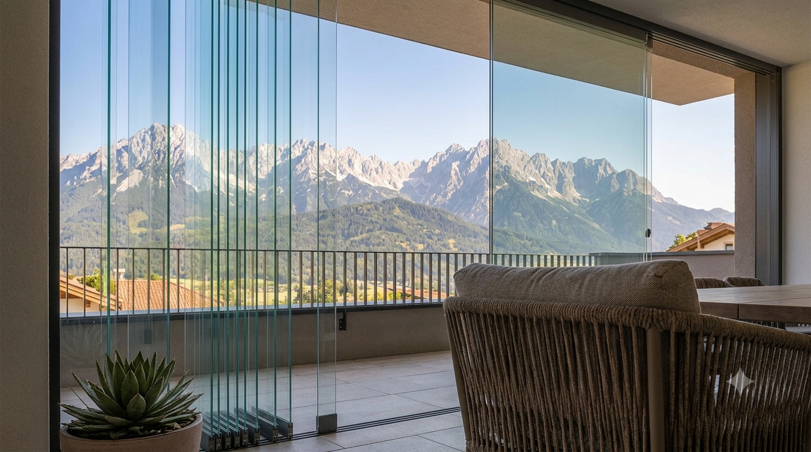
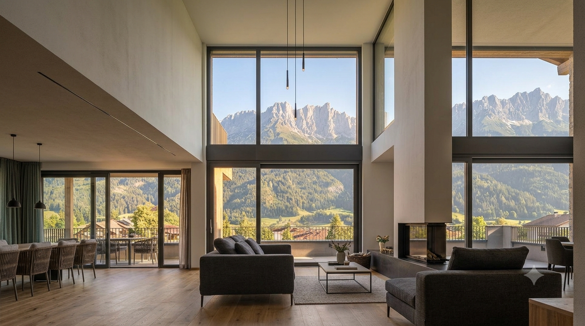
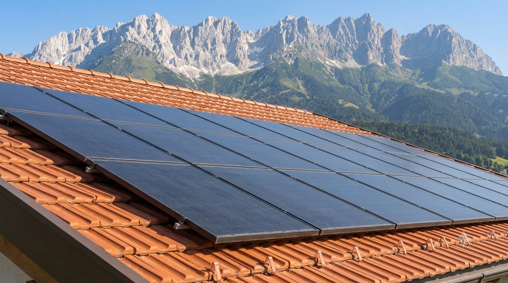
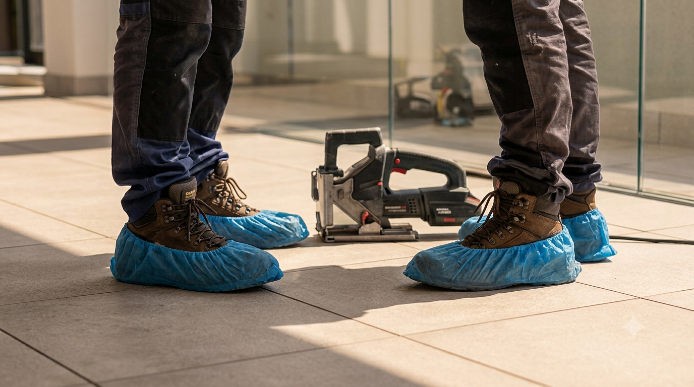
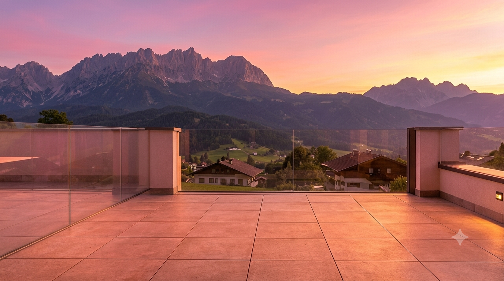

Solutions pour l'architecture résidentielle de La Nucía
La Nucía n'a pas le sel de Benidorm, mais elle fait face à la poussière de la montagne, au pollen et aux pluies de boue. Nous nous adaptons aux habitations de la zone :
- Fermetures de terrasses et rideaux de verre : très courantes dans les maisons mitoyennes de la zone. Nous les laissons impeccables, en nettoyant aussi les rails et profils pour qu'ils glissent en douceur.
- Baies vitrées de chalets : nous atteignons ces vitres fixes ou en hauteur typiques des salons modernes dans les urbanisations comme Bello Horizonte ou Panorama.
- Nettoyage de panneaux solaires : lors de notre passage, nous nettoyons vos panneaux photovoltaïques à l'eau pure pour qu'ils retrouvent leur rendement énergétique maximal.


Pourquoi les familles de La Nucía choisissent Luz de Luna
Nous faisons entrer des professionnels chez vous, et c'est une question de confiance.
- Personnel expérimenté : nos opérateurs sont des vétérans, polis et discrets.
- Ponctualité absolue : nous savons que votre temps est précieux ; nous respectons rigoureusement les horaires convenus.
- Nettoyage "sans trace" : nous utilisons des sur-chaussures et protégeons vos sols et meubles pour que la seule chose que vous remarquiez soit l'éclat de vos fenêtres.

Maintenance de vitres pour commerces et centres sportifs
La Nucía, Cité du Sport, dispose d'installations et commerces en plein essor. Nous proposons des services spécifiques pour les locaux de la CV-70 et du centre du village, en veillant à ce que votre vitrine soit votre meilleure carte de visite face au grand flux de circulation quotidien.
Une technologie qui respecte votre jardin et vos façades
Dans les chalets de La Nucía, il y a souvent des jardins et des plantes près des fenêtres.
- Sans produits chimiques : notre système de nettoyage à l'eau osmosée est 100% écologique et sans danger pour vos plantes et animaux.
- Sans trace de calcaire : l'eau de notre zone est très dure ; notre filtration élimine tous les minéraux pour que vos vitres ne blanchissent pas avec le temps.


Nous répondons à vos questions avant de venir chez vous
Arrivez-vous aux urbanisations éloignées du centre ?
Bien sûr. Nous couvrons d'El Tossal et Nou Espai à Barranco Hondo et les zones limitrophes avec Altea et Polop.
Pouvez-vous nettoyer aussi les volets ?
Oui, sur demande nous réalisons le nettoyage intégral des volets, cadres et moustiquaires pour un entretien complet.